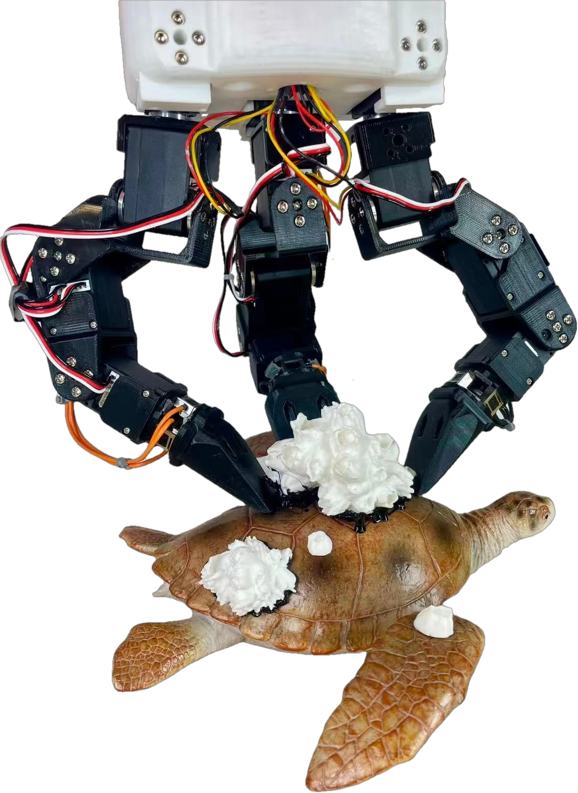
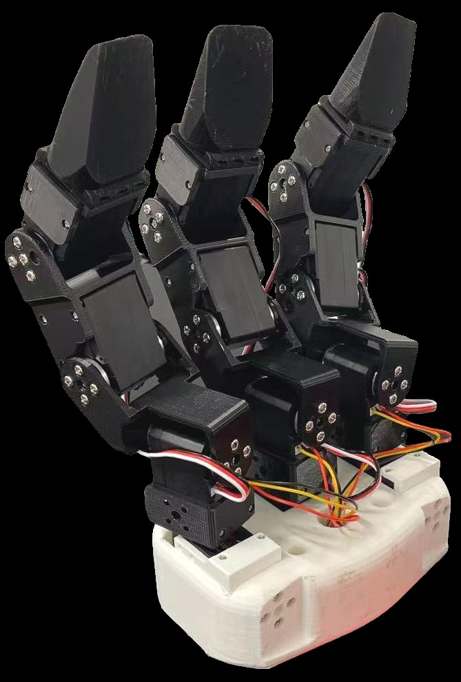
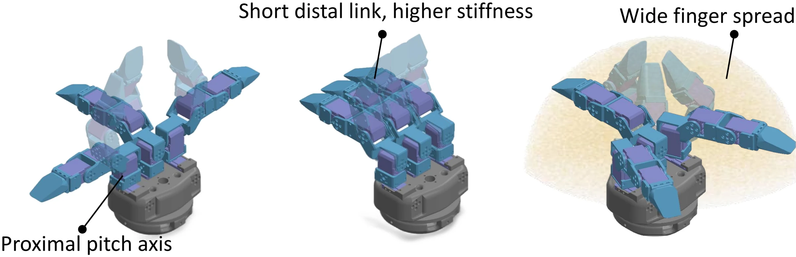

DexRemo
A Force-Sensing Hand Platform and Task Suite for Contact-Rich Removal Manipulation
Accepted to IEEE Transactions on Robotics (T-RO), 2026


A three-finger hand built to push hard
Three identical thumb-like fingers, twelve off-the-shelf servos, and optional three-axis force sensing in every fingertip.
- $200
- to build the 12-DoF hand; force sensing adds about $170 per fingertip
- 62.5 N
- pullout strength, the highest among the hands compared in the paper
- 24% → 83%
- task success once fingertip pose and force are expressed in one shared wrist frame
Hand design
Each finger has four joints: two flexion joints and a two-axis base. The three fingers are arranged radially, so together they reach a hemispherical workspace.

Proximal pitch axis
Each finger pitches from its base, so it can fold in towards the palm or open flat.
Short distal link
A short last link keeps the fingertip stiff when it pushes into a contact.
Wide finger spread
The fingers swing apart to cover a hemispherical reachable workspace.
Video
Adhered, embedded, contaminated or buried targets cannot simply be grasped. The robot has to work an edge loose, keep pressure on a stain, or uncover what it cannot see.
Key idea: force in the wrist frame
A fingertip sensor measures force in its own frame, which turns as the finger bends. Move the finger: the contact force does not change, but the local reading does. Rotated into the wrist frame with forward kinematics, it stays put, and means the same thing for every finger.
Fingertip (local) frame
What the sensor reports. It changes with posture.
Wrist frame
What the policy receives. It follows the physical force only.
Planar illustration of the transform fwrist = R(q) · flocal with a fixed 20 N contact force. The real hand does this in 3D for three fingers, giving a 9-D force input.
Results
Six policies share the hand, the 20 demonstrations per task, the ACT backbone and the rollout protocol. Only the fingertip inputs change.
Success rate by fingertip input
All rollouts on the six core tasks, pooled over three seeds. Every policy also receives three RGB views and joint states.
∅ vision and joints only · R local-frame force · P fingertip pose · W wrist-frame force
Pullout strength, in newtons
Peak force before slip or release in a quasi-static pull test at the middle phalanx. Other hands as cited in the paper.
Wrist-frame force beats local-frame force on all six core tasks, with and without fingertip pose. Three further scenarios (A5, B2, C2) were run with the full policy only: 8/10, 9/10 and 7/10 held-out successes. In total the hand ran 3,420 real-robot evaluation rollouts and more than 100 hours of logged operation, with 23 hardware interruptions.
Tasks
Nine real-robot removal tasks in three families of constraint, each with a preparation protocol, a physical success criterion and held-out objects, poses and colours. Each card opens a successful rollout next to a baseline failure mode.
Release roadmap
DexRemo opens in stages, hardware first. Each stage is released when someone outside the team has followed its documentation from start to finish.
Citation
@article{wang2026dexremo,
title = {DexRemo: A Force-Sensing Hand Platform and Task Suite for
Contact-Rich Removal Manipulation},
author = {Wang, Liman and Zhong, Hanyang and Sun, Zhaole and Cao, Wenting and
Jamil, Babar and Tyrrell, Andy and Luo, Shan and Zhu, Jihong},
journal = {arXiv preprint arXiv:XXXX.XXXXX},
year = {2026}
}